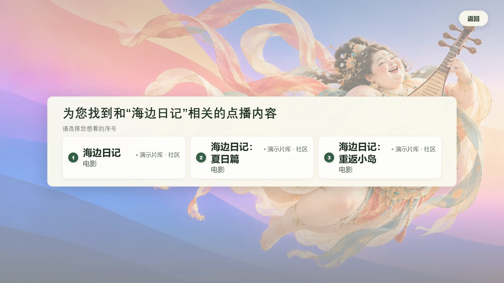
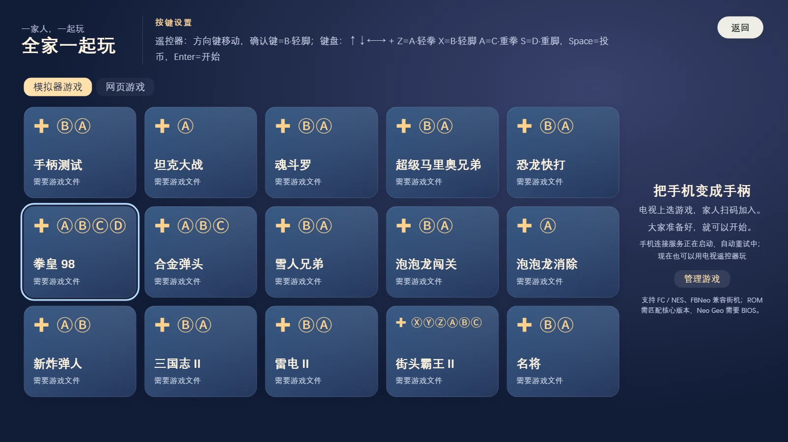

很多智能电视的菜单一层套一层，想看个新闻都要找半天。不少长辈一看就发怵，生怕按错键。
说「看电视」，直接打开频道列表。
说「看中央一台」，直接切到中央一台播放。
当然，也可以用遥控器照常操作。
甚至您还可以用兼容的游戏手柄进行操作，怎么方便怎么来。
看语音换台步骤
直播、点播、学习辅导、游戏，一个 App 就够了。
很多智能电视的菜单一层套一层，想看个新闻都要找半天。不少长辈一看就发怵，生怕按错键。
说「看电视」，直接打开频道列表。
说「看中央一台」，直接切到中央一台播放。
当然，也可以用遥控器照常操作。
甚至您还可以用兼容的游戏手柄进行操作，怎么方便怎么来。
看语音换台步骤
片名都知道了，还得用遥控器在电视键盘上一个字一个字地找。看完新闻想换部电影，又要重新翻菜单。
说「看电影《海边日记》」，电视会在已配置的点播源和家庭影库里找片。
选中想看的结果，按确认键就能播放。

尤其是年纪小的孩子，动画片看得正起劲，很难说停就停。现在，电视能帮您守住约定。开口设限，声纹解锁，自然又优雅。
家长说出时长，嘟嘟喵 TV 会累计当天在 App 内的观看时间。时间一到，娱乐停下，电视转到学习页。
看怎么设置观看时长
用手机拍下题目，扫电视上的二维码上传。打开「帮我看看」，就能在大屏上放大题目。
接入能看图的 AI 模型后，AI 可以一步步讲解解题思路。孩子哪里没听懂，还能接着问。
把学习搬到电视大屏，孩子少用手机和平板，也少了被游戏分心的机会。
看怎么把题目传到电视
孩子认识单词，开口说时却容易卡住。说「练英语」，就能在电视上和嘟嘟喵练习。先听一遍，再跟读，没听清还可以慢速重听。
不同年级有不同的练习。除了跟读，还可以做角色扮演、练听写。
看口语练习怎么用
小时候在街机厅练过的招式，现在可以坐在沙发上教给孩子。父子一人一个手柄，选好角色就开打。大人重温老游戏，孩子也多了个能和爸妈一起玩的周末项目。
在「全家一起玩」里，既能玩内置网页游戏，也能接上兼容手柄玩怀旧街机。《拳皇 98》需要自行导入游戏文件和 Neo Geo BIOS。
看家庭游戏怎么玩